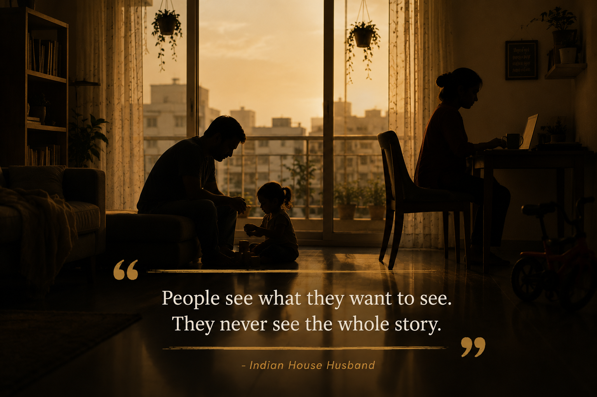

When Society Mistakes Caregiving for Dependence

"He's living off his wife's income."
The words may sound casual, but they reveal how deeply we associate a man's worth with his salary.
What fascinates me is that this isn't a modern stereotype. It's one that has quietly traveled across generations.
Growing up, I knew a family where the husband took early retirement from the Army. His wife was a government school teacher, and together they decided that one of them needed to stay back and raise their children. He chose to become that parent.
At that age, I didn't think much about it. I only remember hearing people joke about him. Nobody seemed interested in asking why they had made that decision.
My father also used to share another story from his childhood. In his village, there was a man who would drop his wife at school every morning and pick her up every afternoon. For many people in the village, that itself became a topic of conversation. Some laughed, some made sarcastic remarks, and some simply couldn't understand why a husband would arrange his day around his wife's profession.
Looking back, I realize something. Neither of these men was refusing responsibility. They were simply carrying a different kind of responsibility.
At that time, however, caregiving was rarely seen as work. Earning was visible. Care was invisible.
When I eventually left my own career to manage our home and care for our daughter, I started hearing similar comments. That's when those old stories suddenly made sense.
Life has a strange way of teaching empathy. Sometimes you don't truly understand another person's choices until you find yourself standing in exactly the same place.
I also wonder whether another silent struggle existed in those earlier generations. Many men were never taught how to speak about vulnerability, self-doubt, or social judgment. If society questioned their masculinity every day, where did those emotions go?
Perhaps some carried them home. Perhaps some relationships quietly suffered because there was no language to express those feelings.
Thankfully, I think we are beginning to change. Not because stereotypes have disappeared. But because conversations have started.
Today, more families are willing to ask a simple question: what is best for us? Not, what will people think?
Some families need two incomes. Some need one parent at home. Some move between those roles during different phases of life. The arrangement itself isn't important. Mutual respect is.
Because whether someone earns the income or prepares the lunch box, both are contributing to the same family.
Perhaps equality isn't about doing identical jobs. Perhaps it's about giving equal dignity to different responsibilities.